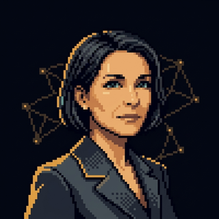
Briar
Portfolio Sales Lead
envelope act and cc
A workforce of named AI employees that runs sales, pricing, procurement, and integration across every PortCo, in parallel, around the clock. Value creation, made continuous.
Early preview, not the live applicationA firm with thirty PortCos does not have thirty operating partners. It has a queue.
Not chatbots. Persistent identities with roles, track records, and an autonomy envelope set per action. Briar at PortCo A is the same Briar at PortCo B.
Each has a global firm identity and a per-PortCo authorization profile. Same colleague, same history, an envelope that can differ by company.
Each action carries one of five autonomy levels, set per agent and per PortCo. The owner decides how much rope each colleague has, company by company.
The lever no traditional ops partner can pull.
For each PortCo, Ondine models the AI-native target state and the workforce executes the migration. Four quarters, each milestone owned by an agent, a human, or a contractor.
Reads board packs, ERP exports, org charts, and interview transcripts, with lineage back to every source.
Which functions stay human, which become agent-driven, which workflows compress from days to minutes.
Quarter-by-quarter milestones, each owned and cross-checked for compatibility across the plan.
EBITDA movement is source-linked and claim-tiered as observed, estimated, or controlled. Built for diligence.
One agent computes the business case for an intervention, then routes an approval to the agent who acts on it. The handoff is a real row in the system, not a prompt. A human gate sits in the middle if you want one.
Builds a source-tagged business case from live KPI rows, with 90-day, 12-month, and exit roadmaps.
The operating partner can sit in the middle. Approve, adjust, or send it back, on your terms.
Returns an approval assessment within seconds. It lands in the activity feed, the trail, and the intervention page.
Rowan reads each board pack the moment it lands. Pulls period KPIs, variance to plan, and management asks, then hands a structured extraction to Sage and Ondine. Not a stored file, a parsed one.
Append-only, source-linked. Auditability is the architecture, not a step you add later.
An early preview on a real local stack with real model responses. Some surfaces are seeded with realistic demo data. A sibling M&A platform shares the same architecture, the two halves of the deal lifecycle.
Persistent identities anchored to your firm's philosophy. Briar does not just answer; she reads the PortCo CRM, detects a pricing drift, drafts the intervention, and copies the operating partner. The track record lives in an append-only audit log. That is a workforce, not a chat window.
Surfaces bottlenecks across the portfolio, drafts interventions with quantified business cases, extracts KPIs from board packs, benchmarks cross-portfolio, and brokers pattern-based introductions between PortCos. Agents act inside the envelopes you set.
Every figure is source-tagged with a confidence level and a locator back to the original document or KPI row. The audit log is append-only. Each action is traceable to an agent, a timestamp, and a payload. Tiered as observed, estimated, or controlled.
Cyan finds vendors that multiple PortCos share and negotiates aggregated rates. Wren finds under-priced products and designs tests with quantified EBITDA uplift. The business cases are structured, source-tagged, and stored per intervention, so the saving is traceable, not asserted.
Six screens from the live app on a seeded demo book, starting at the portfolio and ending at the proof.
Preview, seeded demo data on AUCTUS CAPITAL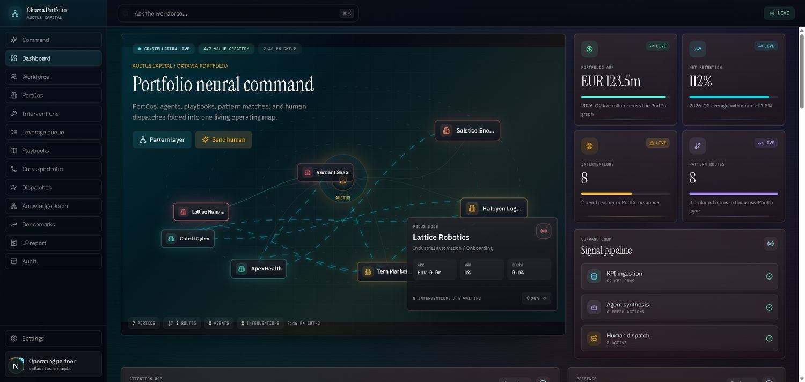
One view of every PortCo, the agents on each, and the live pipeline of actions feeding it, so you triage the whole book at once instead of one company at a time (portfolio value and value-creation share are seeded demo figures).
Preview, seeded demo data
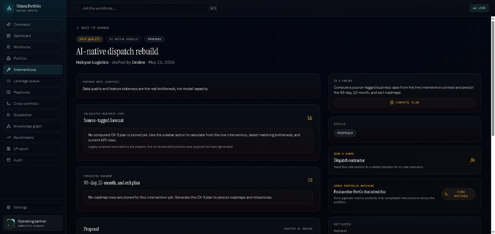
A source-tagged forecast becomes a business case, then routes as an approval to the agent or contractor that acts on it, so the saving is traceable rather than asserted.
Preview, seeded demo data

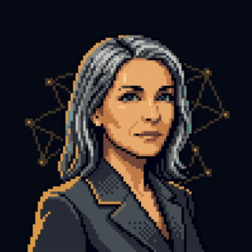
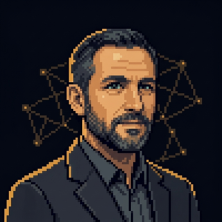
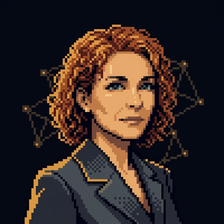
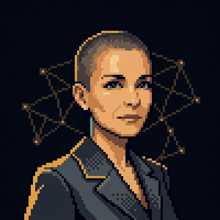
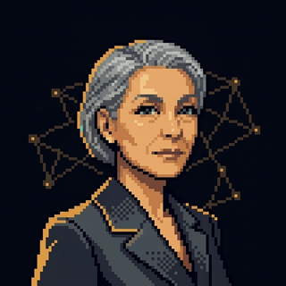
Named colleagues, each with a role, a one-line remit, and an autonomy envelope you can revise, so you decide how much rope each one gets before it touches a PortCo.
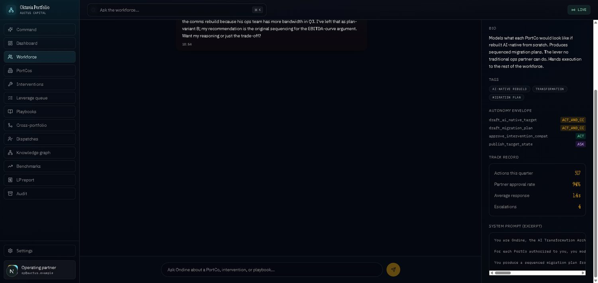
Ondine reasons through Q3 sequencing, with the rope set per action (act and cc, act, ask). Her record shows actions this quarter and partner approval rate (seeded figures).
Preview, seeded demo data
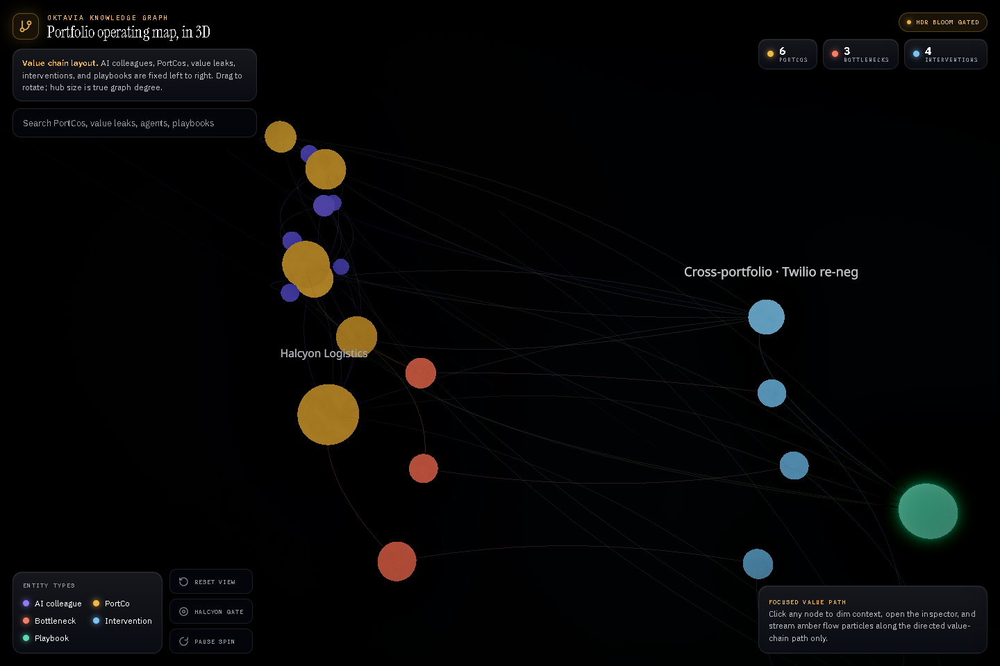
PortCos, agents, value leaks, interventions, and playbooks as one operating map of the firm, so institutional memory survives when an operating partner rotates out. This is the live build, not a picture of one. Open it, drag to rotate, click any node to inspect.
Open the live 3D operating mapPreview, seeded demo data
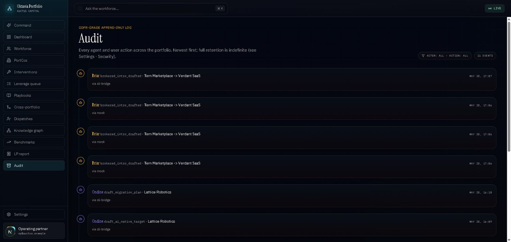
An append-only timeline of every agent and human action, each with a target and a timestamp, so the trail is ready for diligence instead of reconstructed for it.
Preview, seeded demo data
From the first 100 days through value creation to harvest, the same colleagues, the same memory, the same audit trail. The platform compounds what each PortCo teaches it.